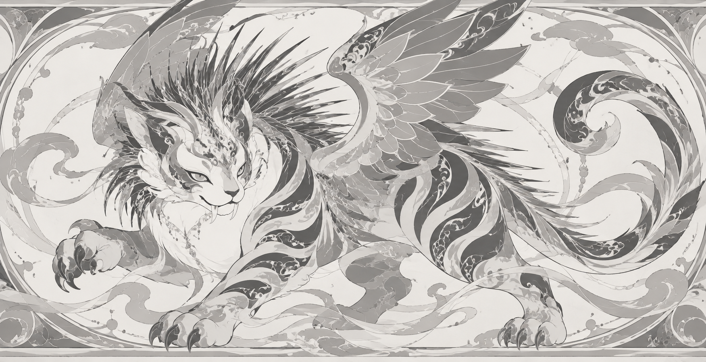
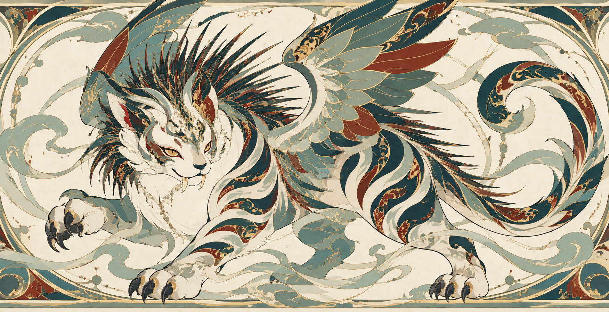
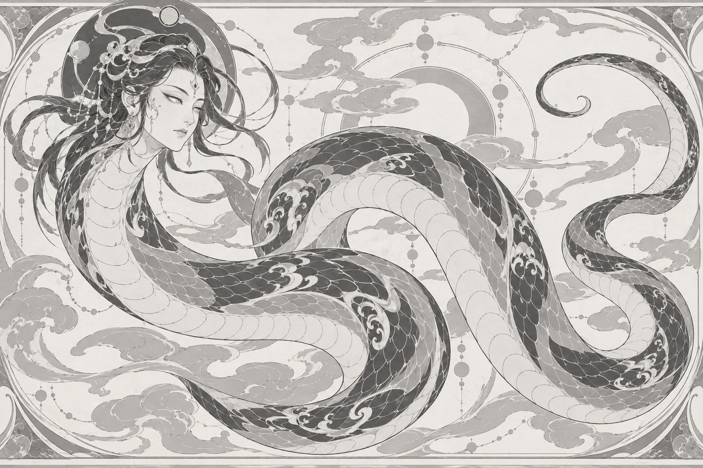
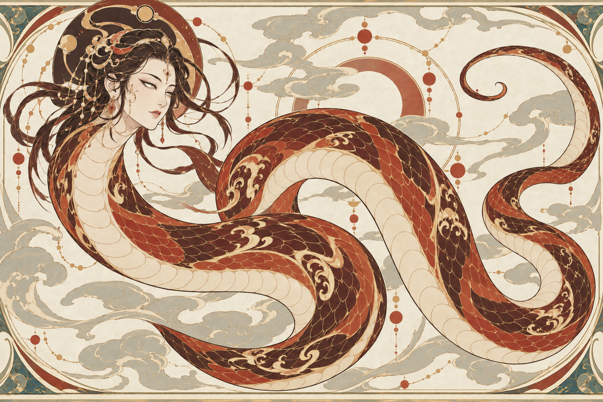

MYTHIC BEAST MURAL / TEST 01
异兽装饰壁画 · 人工验收
以你认可的穷奇为基准，检查烛龙与毕方能否保留同一套绘画语言。点击任意图片可放大。
所有新图均为待验证候选。请分别判断画风、角色特征和上色保形。两只异兽的首轮结果尚不足以证明多次生成的稳定性。
查看 Skill · 查看 agent 检查记录 · 查看生成记录
已认可的视觉基准

基准 · 黑白稿

基准 · 彩色稿
烛龙 待人工验证
测试重点：人面、连续蛇身、无足无翼；暖红身体与独立构图。人工重点：人面和发饰偏仕女形象，是否符合你想要的古拙神性？头后上方弧带与蛇身的关系是否清楚？

01 · 黑白结构稿 完整提示词
03 · 彩色试稿 完整提示词毕方 待人工验证
测试重点：鹤形、仅一足、青身红纹白喙；腿从腹部到脚爪能否清晰辨认；羽片是否仍有原图的精密叠层。首稿翼尖裁切已做一次取景修正；头部羽冠是否过于华丽，留待你判断。
也可以直接在对话里按图号反馈。
本页不上传任何信息。保存使用当前浏览器的本地存储；导出会下载 JSON 文件。导出后将文件交给 Codex，或直接复制意见到对话。